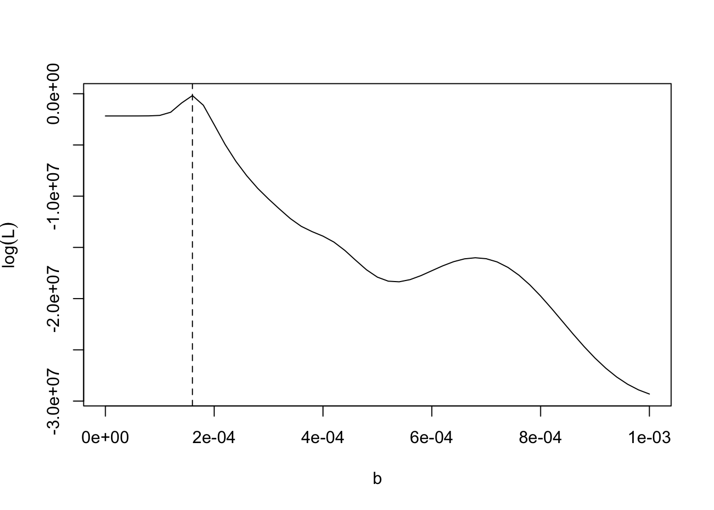

Chapter 9 Compartment Models
Infectious disease dynamics mathematical models have a long history, dating back over a century. Simple mathematical formulations that describe the transition of individuals in a population between “compartments” that capture their infection status yield surprisingly significant insight. Their elegance and simplicity make it simple to expand to more complexities by adding compartments, for example. Although it is often simple to expand these models, the apparent simplicity can hide subtle but important model structure and parameterization choices. Their elegance and simplicity make it simple to add more complexity, such as compartments, to the design. Although it is often simple to expand these models, the apparent simplicity can hide important model structure and parameterization decisions.
We formulate our descriptions of disease transmission as compartmental models, with the population under study being divided into compartments.
At time \(t\), denote
- \(S(t)\): the number of susceptible people;
- \(E(t)\): the number of infected but not yet infectious people;
- \(I(t)\): the number of infectious people;
- \(R(t)\): the number of recovered people.
9.1 A Simple SIS Model (A Model for Diseases with No Immunity)
Because many diseases do not confer immunity, infectives revert to the susceptible class after recovery. Most diseases transmitted by bacterial or helminth agents, as well as most sexually transmitted diseases, can be studied using these models (including gonorrhea, but not such diseases as AIDS, from which there is no recovery).
Figure 9.1: A simple SIS model.
In an SIS model, the total population size \(N = S(t) + I(t)\). The simplest SIS model, due to Kermack and McKendrick, is
\[\begin{eqnarray*} \frac{dS(t)}{dt}& = & - \beta I(t)\frac{S(t)}{N} + \gamma I(t), \\ \frac{dI(t)}{dt}& = &\beta I(t)\frac{S(t)}{N} - \gamma I(t) \end{eqnarray*}\]
where \(\beta\) is the effective contact rate, and \[ \beta \propto \left(\frac{\mathrm{infection}}{\mathrm{contact}} \right) \times \left(\frac{\mathrm{contact}}{\mathrm{time}}\right). \]
Assumptions of SIS models
- The rate of new infections is determined by the incidence of mass action.
- Infectives leave the infective class and return to the susceptible class at a rate of \(\gamma I\) per unit time.
- No one enters or leaves the population.
- No disease deaths occur, and the total population remains constant at \(N\).
9.2 An SIR Model
Figure 9.2: An SIR model.
Consider the SIR model in a population of size \(N\), and note \(N = S(t) + I(t) + R(t)\):
\[\begin{eqnarray*} \frac{dS(t)}{dt}& = & - \beta I(t)\frac{S(t)}{N}, \\ \frac{dI(t)}{dt}& = &\beta I(t)\frac{S(t)}{N} - \gamma I(t), \\ \frac{dR(t)}{dt}& = &\gamma I(t), \end{eqnarray*}\]
where \(\beta\) is the effective contact rate, and \[ \beta \propto \left(\frac{\mathrm{infection}}{\mathrm{contact}} \right) \times \left(\frac{\mathrm{contact}}{\mathrm{time}}\right), \] i.e., (probability of transmission given a contact between a susceptible and an infectious individual) \(\times\) (average rate of contact between susceptible and infected individuals); \(\gamma\) is the removal rate, and \(\gamma^{-1}\) is the average infectious period. The logic of the transmission term is that \(\beta\) is the contact rate among hosts times the probability of infection given a contact.
Let \(s = S / N\), \(i = I / N\) and \(r = R / N\). Dividing the equations for \(S\), \(I\) and \(R\) by \(N\) we get the deterministic SIR epidemic model for this process in the form:
\[\begin{eqnarray*} \frac{ds(t)}{dt}& = & - \beta i(t)s(t), \\ \frac{di(t)}{dt}& = &\beta i(t)s(t) - \gamma i(t), \\ \frac{dr(t)}{dt}& = &\gamma i(t). \end{eqnarray*}\]
Assumptions of SIR models
SIR models for diseases assume that infectives recover with immunity against reinfection.
- Constant (closed) population size: \(N\);
- Constant rates (e.g., transmission, removal rates);
- No demography (i.e., births and deaths);
- Well-mixed population: any infected person has a probability of contacting any susceptible person that is reasonably close to the average.
## Load deSolve package
library(deSolve)
## Create an SIR function
sir <- function(time, state, parameters) {
with(as.list(c(state, parameters)), {
dS <- -beta * S * I
dI <- beta * S * I - gamma * I
dR <- gamma * I
return(list(c(dS, dI, dR)))
})
}Below, we consider a simulation example with \(s(0)=0.999\), \(i(0)=0.001\), \(r(0)=0.0\), \(\beta=0.3\) and \(\gamma=0.1\).
# Set parameters
# Proportion in each compartment: Susceptible 0.999,
# Infected 0.001, Recovered 0
init <- c(S = 0.999, I = 0.001, R = 0.0)
# beta: infection parameter; gamma: recovery parameter
parameters <- c(beta = 0.3, gamma = 0.1)
# Time frame
times <- seq(0, 300, by = 1)
# Solve using ode
# (General Solver for Ordinary Differential Equations)
out <- ode(y = init, times = times, func = sir, parms = parameters)
# Change to data frame
out <- as.data.frame(out)
# Show data
head(out, 5)## time S I R
## 1 0 0.9990000 0.001000000 0.0000000000
## 2 1 0.9986676 0.001221467 0.0001109293
## 3 2 0.9982619 0.001491698 0.0002463585
## 4 3 0.9977671 0.001821286 0.0004116470
## 5 4 0.9971641 0.002222741 0.0006131418Figure 9.3 shows the evolution of the prevalence rate.
Figure 9.3: Simulation example 1.
Next, we consider another simulation example with \(s(0)=0.999\), \(i(0)=0.001\), \(r(0)=0.0\), \(\beta=0.075\) and \(\gamma=0.1\).
# Set parameters
# Proportion in each compartment: Susceptible 0.999,
# Infected 0.001, Recovered 0
init <- c(S = 0.999, I = 0.001, R = 0.0)
# beta: infection parameter; gamma: recovery parameter
parameters <- c(beta = 0.075, gamma = 0.1)
# Time frame
times <- seq(0, 300, by = 1)
# Solve using ode
# (General Solver for Ordinary Differential Equations)
out <- ode(y = init, times = times, func = sir, parms = parameters)
# Change to data frame
out <- as.data.frame(out)Figure 9.4 shows the evolution of the prevalence rate.
Figure 9.4: Simulation example 1.
9.2.1 An SIR model with births and deaths
Because the time scale of an epidemic is generally much shorter than the demographic time scale, we have omitted births and deaths from our description of epidemic models. In effect, we’ve used a time scale with a negligible number of births and deaths per unit of time. There are, however, diseases that are endemic in many parts of the world and kill millions of people every year.

Figure 9.5: An SIR model with birth and death.
We consider the following SIR model with births and deaths:
\[\begin{eqnarray*} \frac{dS(t)}{dt}& = &\mu\{N - S(t)\} - \beta I(t)\frac{S(t)}{N}, \\ \frac{dI(t)}{dt}& = &\beta I(t)\frac{S(t)}{N} - (\mu + \gamma)I(t), \\ \frac{dR(t)}{dt}& = &\gamma I(t) - \mu R(t), \end{eqnarray*}\]
where \(\beta\) is the effective contact rate, and \[ \beta \propto \left(\frac{\mathrm{infection}}{\mathrm{contact}} \right) \times \left(\frac{\mathrm{contact}}{\mathrm{time}}\right), \] i.e., (probability of transmission given a contact between a susceptible and an infectious individual) \(\times\) (average rate of contact between susceptible and infected individuals).
birth rate and death rate are equal, which is denoted as \(\mu\);
\(\gamma\) is the removal rate, and \(\gamma^{-1}\) is the average infectious period.
At the early stage of an SIR outbreak, when \(S(t) \approx N\), the number of infected individuals \(I(t)\) is approximated by \[ I(t) \approx I_0 \exp \{(\beta - \gamma - \mu) t\} = I_0 \exp \{(R_0 - 1)(\gamma + \mu)t\}, \] where \(R_0 = \beta/(\gamma + \mu)\) is the basic reproduction number, \(I_0\) is the number of infectious people at time \(0\), \(\gamma^{-1}\) is the infectious period and \(\mu^{-1}\) is the host lifespan.
An epidemic occurs if the number of infected individuals increases, \[ \beta I \frac{S}{N} - (\mu + \gamma)I>0 \Rightarrow \beta - (\mu + \gamma)>0 \Rightarrow R_0>1. \]
9.3 SIR parameter estimation
- Feature match
At the early stage of an SIR outbreak, when \(S(t) \approx N\), the number of infected individuals \(I(t)\) is approximated by \[ I(t) \approx I_0 \exp \{(\beta - \gamma - \mu) t\} = I_0 \exp \{(R_0 - 1)(\gamma + \mu)t\}, \] where \(R_0\) is the basic reproduction number, \(I_0\) is the number of infectious people at time \(0\), \(\gamma^{-1}\) is the infectious period and \(\mu^{-1}\) is the host lifespan. Taking logs of both sides, we get \[ \log(I_t)\approx \log(I_0)+(R_0-1)(\gamma+\mu)t, \] which implies that we will be able to get a reasonable and cheerful estimate of \(R_0\) by a simple linear regression.
- Least squares
The least squares method allows us to quantify the gap between the data and the model’s predictions. Then we can search through all of the possible values of a model’s parameters to find the ones that minimize the discrepancy.
Let \(\mu = 0\), for a given \((\beta, \gamma)\), we denote \(I(t;\beta, \gamma) = I(t)\) and \[ (\widehat{\beta}, \widehat{\gamma}) = \arg\min_{(\beta, \gamma)}\sum_{j = 1}^{n} \{I(t_j;\beta, \gamma) - Y_j\}^2, \] where \(Y_j\) is the number of observed infected people at time \(t_j\).
- Maximum likelihood
Let \(Y_j\) be the observed number of infected case. We can assume \[ Y_j \sim \textrm{Poisson}\{pI(t_j;\beta, \gamma, \mu)\}, \] where the parameter \(p\) reflects a combination of sampling efficiency and the detectability of infections.
9.4 Implementation of parameter estimation in R
Example code for implementing SIR to model the outbreak of measles in Niamey can be found in https://kingaa.github.io/short-course/parest/odes.html. We mainly show how to use R to find the parameters in SIR model by minimizing the sum of squared errors. Here is the data of the outbreak of measles in Niamey: http://kingaa.github.io/clim-dis/parest/niamey.csv.
9.4.1 Example 1. Outbreak of measles in Niamey
library(dplyr)
library(plotly)
library(slid)
niamey <-
read.csv("http://kingaa.github.io/clim-dis/parest/niamey.csv")
head(niamey,5)## biweek community measles
## 1 1 A 22
## 2 2 A 27
## 3 3 A 64
## 4 4 A 84
## 5 5 A 116plot_ly(data = niamey) %>%
add_trace(x = ~biweek, y = ~measles, color = ~community,
type = 'scatter', mode = 'lines+markers')- Least squares method
The R package “pomp” provides facilities for dealing with deterministic dynamics, which is an important special case.
library(pomp)
niameyA <- pomp(
data = subset(niamey, community == "A", select = - community),
times = "biweek", t0 = 0,
skeleton = vectorfield(
Csnippet("
DS = - Beta*S*I/N;
DI = Beta*S*I/N - gamma*I;
DR = gamma*I;")),
rinit = Csnippet("
S = S_0;
I = I_0;
R = N - S_0 - I_0;"),
statenames = c("S", "I", "R"),
paramnames = c("Beta", "gamma", "N", "S_0", "I_0"))- Grid search method
If we assume all the other parameters are known, one simple option to find optimal \(\beta\) would be grid searching a value that minimizes the sum of squared error (SSE), which is the difference between the fitted infection curve with given \(beta\) compared to the true observations. For example, it is well known that measles’ infectious period is about two weeks, so we can safely assume that \(\gamma = 1\).
sse <- function (params) {
x <- trajectory(niameyA, params = params)
discrep <- x["I", , ] - obs(niameyA)
sum(discrep^2)
}
# assume gamma = 1 is known
# grid search for beta
f1 <- function (beta) {
params <- c(Beta = beta, gamma = 1, N = 50000,
S_0 = 10000, I_0 = 10)
sse(params)
}
beta <- seq(from = 0, to = 40, by = 0.5)
SSE <- sapply(beta, f1)
plot(beta, SSE, type = 'l')
beta.hat1 <- beta[which.min(SSE)]
abline(v = beta.hat1, lty = 2)
Next, we plugin the estimated \(\hat{\beta}\) to the process and visualize the fitted curve for \(I(t)\) compared to the observed path.
coef(niameyA) <- c(Beta = beta.hat1, gamma = 1,
N = 50000, S_0 = 10000, I_0 = 10)
x1 <- trajectory(niameyA, format = "data.frame")
sir.fit.df <- left_join(as.data.frame(niameyA), x1, by = 'biweek')
plot_ly(data = sir.fit.df) %>%
add_trace(x = ~biweek, y = ~measles, type = 'scatter',
mode = 'lines+markers', name = 'data') %>%
add_trace(x = ~biweek, y = ~I, type = 'scatter',
mode = 'lines+markers', name = 'fitted')- Optimization algorithm
However, this grid-search approach won’t perform well when we have more than one parameter. In that case, we can use the optim function instead.
# General-purpose optimization
f2 <- function (par) {
params <- c(Beta = par[1], gamma = par[2],
N = 50000, S_0 = 10000, I_0 = par[3])
sse(params)
}
fit2 <- optim(fn = f2, par = c(8, 1, 10))
fit2## $par
## [1] 9.892048 1.150991 1.042747
##
## $value
## [1] 164836.4
##
## $counts
## function gradient
## 253 NA
##
## $convergence
## [1] 0
##
## $message
## NULLbeta.hat2 <- fit2$par[1]
gamma.hat2 <- fit2$par[2]
I_0.hat2 <- fit2$par[3]
coef(niameyA) <- c(Beta = beta.hat2, gamma = gamma.hat2,
N = 50000, S_0 = 10000, I_0 = I_0.hat2)
x2 <- trajectory(niameyA, format = "data.frame")
sir.fit.df <- left_join(as.data.frame(niameyA), x2, by = 'biweek')
plot_ly(data = sir.fit.df) %>%
add_trace(x = ~biweek, y = ~measles, type = 'scatter',
mode = 'lines+markers', name = 'data') %>%
add_trace(x = ~biweek, y = ~I, type = 'scatter',
mode = 'lines+markers', name = 'fitted')- Maximum likelihood approach
Another way to fit the model is using likelihood. Note that the model can be simplified a little bit by defining \(b = \beta/N\).
niameyA2 <- pomp(
data = subset(niamey, community == "A", select = -community),
times = "biweek", t0 = 0,
skeleton = vectorfield(
Csnippet("
double incidence;
incidence = b*S*I;
DS = -incidence;
DI = incidence - gamma*I;")),
rinit=Csnippet("
S = S_0;
I = I_0;"),
paramnames = c("b", "gamma", "S_0", "I_0"),
statenames = c("S", "I"))
loglik.normal <- function (params) {
x <- trajectory(niameyA2, params = params)
sum(dnorm(x = obs(niameyA2), mean = x["I",,],
sd = params["sigma"], log = TRUE))
}
f3 <- function (b) {
params <- c(S_0 = 10000, I_0 = 10, gamma = 1,
b = b, sigma = 1)
loglik.normal(params)
}
b <- seq(from = 0, to = 0.001, by = 0.00002)
ll <- sapply(b, f3)
plot(b, ll, type='l', ylab = expression(log(L)))
b.hat <- b[which.max(ll)]
abline(v = b.hat, lty = 2)
coef(niameyA2) <- c(S_0 = 10000, I_0 = 10,
gamma = 1, b = b.hat, sigma = 1)
x <- trajectory(niameyA2, format = "data.frame")
sir.fit.df <- left_join(as.data.frame(niameyA2),
x, by = 'biweek')
plot_ly(data = sir.fit.df) %>%
add_trace(x = ~biweek, y = ~measles, type = 'scatter',
mode = 'lines+markers', name = 'data') %>%
add_trace(x = ~biweek, y = ~I, type = 'scatter',
mode = 'lines+markers', name = 'fitted')Besides a gaussian distribution, it is also possible to choose other random compenent, for example, a poisson distribution.
9.4.2 Example 2. COVID-19
In the COVID-19 case, the situation becomes slightly more complicated due to the unsatisfying data quality in terms of active cases and recovered cases. Therefore, we modify the algorithm to find the parameters that minimize the distance between the curve of fitted active cases (\(I\)) plus removed compartment \(R\) and the cumulative positive COVID-19 cases time series. If we use the data observed since the beginning of the pandemic, it is reasonable to set the initial value \(I_{0}\) to be 1 and focusing on the estimation of other parameters. However, if we choose a different training period, for example, the most recent 60 days, it is possible the initial value of active cases \(I_{0}\) may be unobserved or calculated inaccurately. Therefore, the initial value can also be treated as a parameter and estimated based on collected data. In this case, an optimizing function such as optim() might be preferred than grid search. Here is an example of implementing SIR model to fit the spread of COVID-19 in Los Angeles, California.
data("I.county")
data("pop.county")
# the row storing the data for Los Angeles
i <- which(I.county$County == 'Orange' &
I.county$State == 'California')
N0 <- pop.county %>%
filter(County == 'Orange County' & State == 'California') %>%
pull(population)
est.h <- 60
pred.h <- 12
date.start <- as.Date('2020-10-01')
dates.train <- date.start + 0:(est.h - 1) # training period
dates.test <- date.start + est.h + 0:(pred.h - 1) # testing period
dates.all <- date.start + 0:(est.h + pred.h - 1)
P.train <- data.frame(Date = 0:(est.h - 1),
P_cases = as.numeric(I.county[i,
paste0('X', as.character(dates.train,
format = '%Y.%m.%d'))]))
P.all <- data.frame(Date = 0:(est.h + pred.h - 1),
P_cases = as.numeric(I.county[i,
paste0('X', as.character(dates.all,
format = '%Y.%m.%d'))]))Now we define a pomp object encoding the data and the model and a loss function SSE that evaluate the loss function value based on the simulated trajectories with given parameters.
process.tmp <- pomp(
data = P.train,
times = "Date", t0 = 0,
skeleton = vectorfield(
Csnippet("
DS = - Beta*S*I/N;
DI = Beta*S*I/N - gamma*I;
DR = gamma*I;")),
rinit = Csnippet("
S = S_0;
I = I_0;
R = N - S_0 - I_0;"),
statenames = c("S", "I", "R"),
paramnames = c("Beta", "gamma", "N", "S_0", "I_0"))
sse <- function (params) {
x <- trajectory(process.tmp, params = params)
discrep <- x["I", , ] + x["R", , ] - obs(process.tmp)
sum(discrep^2)
}Next, we can find the parameters that minimize the SSE using optim function.
# set initial value of the process
S0 <- N0 - P.train$P_cases[1]
# assume that the removal rate is known
R.rate <- 0.05
f1 <- function (par) {
params <- c(Beta = par[2], gamma = R.rate, N = N0,
S_0 = S0, I_0 = par[1])
sse(params)
}
# initial value for parameters
beta0 <- 0.07
I0 <- 1000
fit1 <- optim(fn = f1, par = c(I0, beta0))
I0.hat1 <- fit1$par[1]
beta.hat1 <- fit1$par[2]
process.tmp1 <- process.tmp
pomp::coef(process.tmp1) <- c(Beta = beta.hat1, gamma = R.rate,
N = N0, S_0 = S0, I_0 = I0.hat1)
x1 <- trajectory(process.tmp1, times = 0:(est.h + pred.h - 1),
format = "data.frame")
valid.df <- data.frame(Date = dates.all,
P_cases = P.all$P_cases,
SIR_P = x1$I + x1$R,
type = c(rep('fitted', est.h),
rep('predicted', pred.h)))
# Visualization of fitting
plot_ly(data = valid.df) %>%
add_trace(x = ~Date, y = ~P_cases, type = 'scatter',
mode = 'lines+markers', name = 'infected cases') %>%
add_trace(x = ~Date, y = ~SIR_P, symbol = ~type,
mode = 'lines+markers')## No trace type specified:
## Based on info supplied, a 'scatter' trace seems appropriate.
## Read more about this trace type -> https://plotly.com/r/reference/#scatter9.5 Basic Reproduction Number
The basic reproduction number (\(R_0\)) is a key concept, which is defined as the number of secondary cases expected from a single (typical) infection in a completely susceptible population.
It is important to note that \(R_0\) is a dimensionless number and not a rate, and \[ R_0 \propto \left(\frac{\mathrm{infection}}{\mathrm{contact}} \right) \times \left(\frac{\mathrm{contact}}{\mathrm{time}}\right) \times \left(\frac{\mathrm{time}}{\mathrm{infection}}\right). \]
If \(R_0 < 1\) the disease dies out, however, if \(R_0 > 1\) the disease becomes endemic.
For the SIR model, when \(S(t) \approx N\), \(R_0 = \frac{\beta}{\gamma + \mu}\).
For the SEIR model, when \(S(t) \approx N\), \(R_0 = \frac{\sigma}{\sigma + \mu} \times \frac{\beta}{\gamma + \mu}\).
If \(R_0 < 1\), each existing infection results in the formation of fewer new infections. The disease will deteriorate and eventually die out in this case.
If \(R_0 = 1\), each existing infection results in the emergence of a new infection. The disease will remain alive and stable, but there will not be an outbreak or an epidemic.
If \(R_0 > 1\), each existing infection multiplies the number of new infections. The disease will spread from person to person, and an outbreak or epidemic may occur.
COVID-19 \(R_0\)
The \(R_0\) for SAS-Cov-2 is a median of 5.7, according to a study published online in Emerging Infectious Diseases, which is about double an earlier R0 estimate of 2.2 to 2.7
In this case, 5.7 means that one person infected with COVID-19 can potentially spread the coronavirus to 5 to 6 people, rather than the 2 to 3 people previously thought by researchers.
Based on the \(R_0\) of 5.7, in order to stop COVID-19 transmission through vaccination and herd immunity, at least 82 percent of the population must be immune to it.
9.5.1 SEIR Model
- Consider the SIR model in a population of size \(N\), and note that \(N = S(t) + I(t) + R(t)\).
\[\begin{eqnarray*} \frac{dS(t)}{dt}& = &\mu\{N - S(t)\} - \beta I(t)\frac{S(t)}{N} + \omega R, \\ \frac{dE(t)}{dt}& = &\beta I(t)\frac{S(t)}{N} - (\mu + \sigma)E(t), \\ \frac{dI(t)}{dt}& = &\sigma E(t) - (\mu + \gamma)I(t), \\ \frac{dR(t)}{dt}& = &\gamma I(t) - (\mu + \omega) R(t), \end{eqnarray*}\]
- \(\omega^{-1}\) is the average duration of immunity;
- \(\sigma^{-1}\) is the average latent period.
9.6 Herd Immunity
It is necessary to lower the basic reproduction number \(R_0\) below one in order to prevent a disease from becoming endemic. Immunization can sometimes help with this.
If a fraction \(p\) of the population’s newborn members are successfully immunized, the effect is to replace \(N\) with \(N(1 - p)\), bringing the basic reproduction number down to \(R 0(1 - p)\). The requirement \(R_0(1 - p) < 1\) gives \(1 - p < 1/R_0\), or \[ p > 1 - \frac{1}{R_0}. \]
A population is said to have herd immunity if a large enough percentage of its members have been immunized to prevent the disease from becoming endemic.
The only diseases for which this has been achieved globally are smallpox (\(R_0\) is approximately 5) and rinderpest, a cattle disease, for which 80 percent immunization does provide herd immunity.
In the United States, epidemiological data show that \(R_0\) for rural populations ranges from 5.4 to 6.3, implying that 81.5 percent to 84.1 percent of the population must be vaccinated. In urban areas, \(R_0\) ranges from 8.3 to 13.0, implying that 88.0 to 92.3 percent of the population must be vaccinated.
9.7 Exercises
We have estimated the parameters by minimizing the SSE between model-predicted number of cases and observed data \((\text{prediction} - \text{data})^2\). What would happen if we would like to minimize the squared error on the log scale i.e., \((\log(\text{prediction}) - \log(\text{data}))^2\)? What would happen if we would like minimize the square-root scale, i.e., \((\sqrt{\text{prediction}} - \sqrt{\text{data}})^2\)? Try to fit the model with different definitions of loss function using the niamey data example. What’s the “correct” scale to choose?
Using the method argument, change the optimization algorithm used by optim. Examine the impact on your parameter estimations. Try to use other optimizers, such as
nlm,nlminb,constrOptim, or thenloptrpackage, etc.Assume instead that the errors are log-normal and have a constant variance. Will least-squares and maximum likelihood parameter estimates be the same under what definition of SSE?
Simulate and visualize the dynamics using SIR model with births and deaths. Consider
time=seq(0,20,by=1/52)in years,N=100000,t_0 = 0,S_0=100000/12,I_0=100and two sets of parameters: (a) \(\mu = 1/50\), \(\gamma = 365/13\), \(\beta = 400\) and (b) \(\mu = 1/50\), \(\gamma = 365/5\), \(\beta = 1000\).According to the model’s assumptions, the average host lifespan is \(1/\mu\). Explore the differential equations for lifespans of 20 and 200 years to see how the host lifespan affects the dynamics. Consider
time=seq(0, 20, by=1/52),N=100000,t_0 = 0,S_0=100000/12,I_0=100and parameters: \(\gamma = 365/13\), \(\beta = 400\).
6: Compare and contrast the dynamics of the SIR and SEIR models for the parameters \(\mu = 1/50\), \(\gamma = 365/13\), \(\beta = 400\) and assuming that for example, \(E(0)=100\), the latent period has duration 8 days, and immunity lasts for 10 years in the SEIR model.